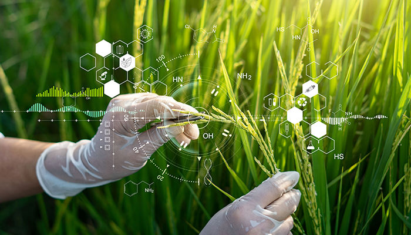

Práticas modernas
Conservação do solo e da água com uso racional de recursos naturais.
Impactos ambientais, práticas sustentáveis, inovação tecnológica, biotecnologia e conclusão do seminário.
O manejo de nutrientes pode gerar impactos em água e solo, como a eutrofização de ambientes aquáticos quando há aumento de fósforo e nitrogênio. No caso dos defensivos, há riscos de contaminação de água e alimentos.

Atividades agrícolas como cultivo de arroz e decomposição de esterco contribuem para emissões de metano (CH₄). O óxido nitroso (N₂O) é associado principalmente à agricultura, formado por ação microbiana no solo e intensificado quando há maior aporte de nitrogênio.
O metano entérico (CH₄) é o principal gás de efeito estufa gerado na pecuária, produzido na digestão de ruminantes e eliminado por eructação.
As ações de conservação do solo e da água voltadas ao uso racional e manejo de recursos naturais (solo, água e biodiversidade) são instrumentos para promover agricultura sustentável.

O planejamento por microbacias é destacado como estratégia para organizar ações de conservação e manejo integrado dos recursos naturais.
A adoção de tecnologias adequadas deve considerar dimensões ambientais, econômicas e sociais, reforçando o uso consciente de insumos.
Conservação do solo e da água com uso racional de recursos naturais.
Tecnologias adequadas considerando dimensões ambientais, econômicas e sociais.
A agricultura de precisão é apresentada como forma de uso mais racional de insumos químicos, com práticas como mapeamento da variabilidade do solo e aplicação variável de fertilizantes.

O uso de imagens de satélite e sensores em máquinas, além de amostragem de solo e plantas, permite entender variações de produtividade.
Relatos institucionais indicam redução de custos com fertilizantes e redução de defensivos, em parte por evitar reaplicação em áreas já tratadas.
Mapeamento da variabilidade do solo e aplicação variável de insumos.
Imagens de satélite, sensores e amostragem de solo e plantas.
A biotecnologia na agricultura depende de conceitos químicos e biológicos, envolvendo moléculas, genes e interação organismo–ambiente.

A CTNBio é instância ligada à Política Nacional de Biossegurança de organismos geneticamente modificados (OGM), responsável por normas técnicas e pareceres para atividades de pesquisa e uso comercial, com base em avaliação de riscos à saúde humana e ao meio ambiente.
Exemplos de OGM incluem plantas transgênicas, apresentados como aplicação biotecnológica no campo.
O material base cita OGM, como plantas transgênicas.
Exemplos de OGM incluem plantas transgênicas no contexto agrícola.
A Química é parte estrutural da Engenharia Agronômica porque permite compreender e manejar, de forma racional, o solo (pH, disponibilidade de nutrientes e CTC), a nutrição mineral das plantas e o uso de fertilizantes (incluindo a relação com o ciclo do nitrogênio).
Ela também é essencial para tratar defensivos agrícolas com responsabilidade — entendendo finalidade, riscos e vias de exposição — e para discutir água na agricultura, desde qualidade até efeitos como salinização e eutrofização.
A agenda contemporânea de sustentabilidade integra conhecimentos químicos com tecnologia e governança: mitigação de impactos, redução do desperdício de insumos via agricultura de precisão e avaliação regulatória de biotecnologias.